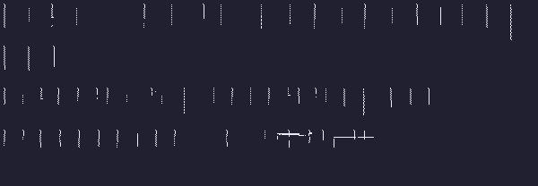

!Arial.bold.14.0.chfnt (size 14, ascent 11, descent 3, glyphs 256/256)

!Arial.bold.14.700.chfnt (size 14, ascent 11, descent 3, glyphs 256/256)
!Arial.italic.12.0.chfnt (size 12, ascent 9, descent 3, glyphs 256/256)
!Arial.italic.14.0.chfnt (size 14, ascent 11, descent 3, glyphs 256/256)
!Arial.italic.14.700.chfnt (size 13, ascent 11, descent 2, glyphs 256/256)
!Arial.normal.12.0.chfnt (size 12, ascent 9, descent 3, glyphs 256/256)
!Arial.normal.14.0.chfnt (size 14, ascent 11, descent 3, glyphs 256/256)
!Arial.normal.14.700.chfnt (size 14, ascent 11, descent 3, glyphs 256/256)
!Arial.normal.20.700.chfnt (size 19, ascent 15, descent 4, glyphs 256/256)
!Arial.normal.48.0.chfnt (size 47, ascent 38, descent 9, glyphs 256/256)

!Courier New.normal.13.0.chfnt (size 12, ascent 9, descent 3, glyphs 256/256)